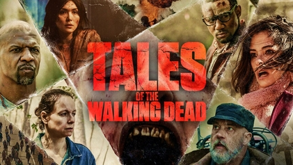
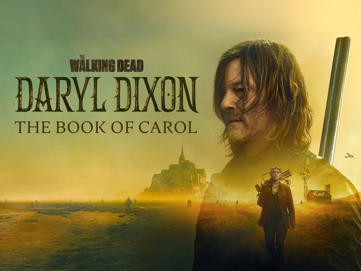
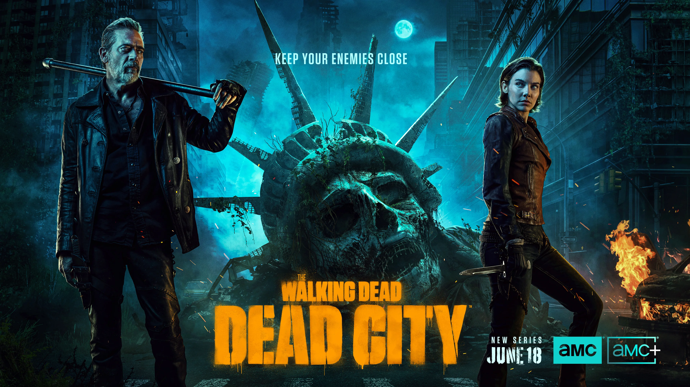

Acompanha o início do apocalipse numa perspetiva diferente da série original, começando em Los Angeles. A história foca-se inicialmente na família Clark e mostra como tudo começou a colapsar.
World Beyond (2020–2021)
Segue um grupo de jovens que cresceram já num mundo pós-apocalíptico. Ao saírem da sua comunidade protegida, descobrem segredos sobre a organização CRM.

Tales of the Walking Dead (2022)
Série antológica com episódios independentes. Cada capítulo apresenta novas personagens (ou histórias de personagens já conhecidas) em diferentes fases do apocalipse.

Daryl Dixon The book of Carol (2023–2026)
Acompanha Daryl após os eventos da série principal, quando ele naufraga em França. Carol vai à procura dele e acabam presos em França, tentando voltar para casa.

Dead City (2023–presente)
Segue Maggie e Negan numa missão perigosa em Manhattan, agora isolada e dominada por ameaças humanas e walkers. Explora a relação tensa entre os dois.
The Ones Who Live (2024)
Foca-se em Rick e Michonne após a série principal. Revela o destino de Rick e aprofunda a história da CRM.